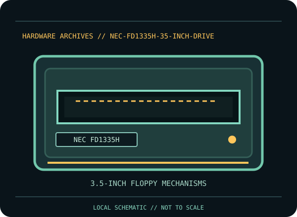

[ INDIVIDUAL COMPONENT // FLOPPY DRIVES ]
NEC FD1335H 3.5-inch Drive
This record identifies a documented physical floppy drive, controller, or preservation interface. It separates confirmed model facts from details that vary by suffix, board revision, host, media and configuration.

IDENTIFICATION NOTE: Match the full model/part number, revision, connector and manual before use. Similar family names do not establish interchangeable mechanics or host compatibility.
Model specifications
| Catalog subcategory | 3.5-inch floppy mechanisms |
|---|---|
| Exact model / family | NEC FD1335H |
| Era / product family | NEC FD1035 family high-density 3.5-inch mechanism |
| Documented characteristics | Exact NEC FD1335H model documented in NEC’s 1990 product description. The product sheet covers a model family; identify the complete model code and revision before assigning a particular density, interface option, jumper, or capacity. |
| Interface / connectors | Use the FD1335H product description and label to confirm connector and configuration. Do not assume all FD1035-series mechanisms share the same signals or jumpers. |
| Host and media compatibility | A PC host format is supported only when the exact FD1335H configuration, controller data rate, media density, cable select and host firmware agree. Family name alone is not a guarantee of reading a particular disk format. |
Model-specific compatibility checks
- Identify the complete model/suffix, board revision, serial/date codes and connector arrangement from the physical unit; photograph all labels before installation.
- A PC host format is supported only when the exact FD1335H configuration, controller data rate, media density, cable select and host firmware agree. Family name alone is not a guarantee of reading a particular disk format.
- Confirm the host controller, drive wiring, power, drive select, termination, media density and recording format against the cited model documentation. Do not infer a fit or capacity solely from the drive size or connector shape.
Preservation and service notes
Use model-specific NEC documentation for service and verify the mechanism suffix before calibration. Keep the original jumper configuration and record any changes. Preserve representative sector/flux captures with controller, drive, firmware and media details.
Keep original media and raw captures intact. Log the exact drive/controller/software configuration, acquisition date, condition and any service performed; checksum verified copies before creating derivatives.
Manufacturer documentation & sources
- NEC — FD1335H Product Description (April 1990)NEC product description specifying the FD1335H family and its configuration-dependent characteristics.
Sources are model-specific manufacturer documentation or archival copies of the original source. Where a document covers a family or multiple revisions, confirm its applicability to the exact unit before using an electrical or service specification.